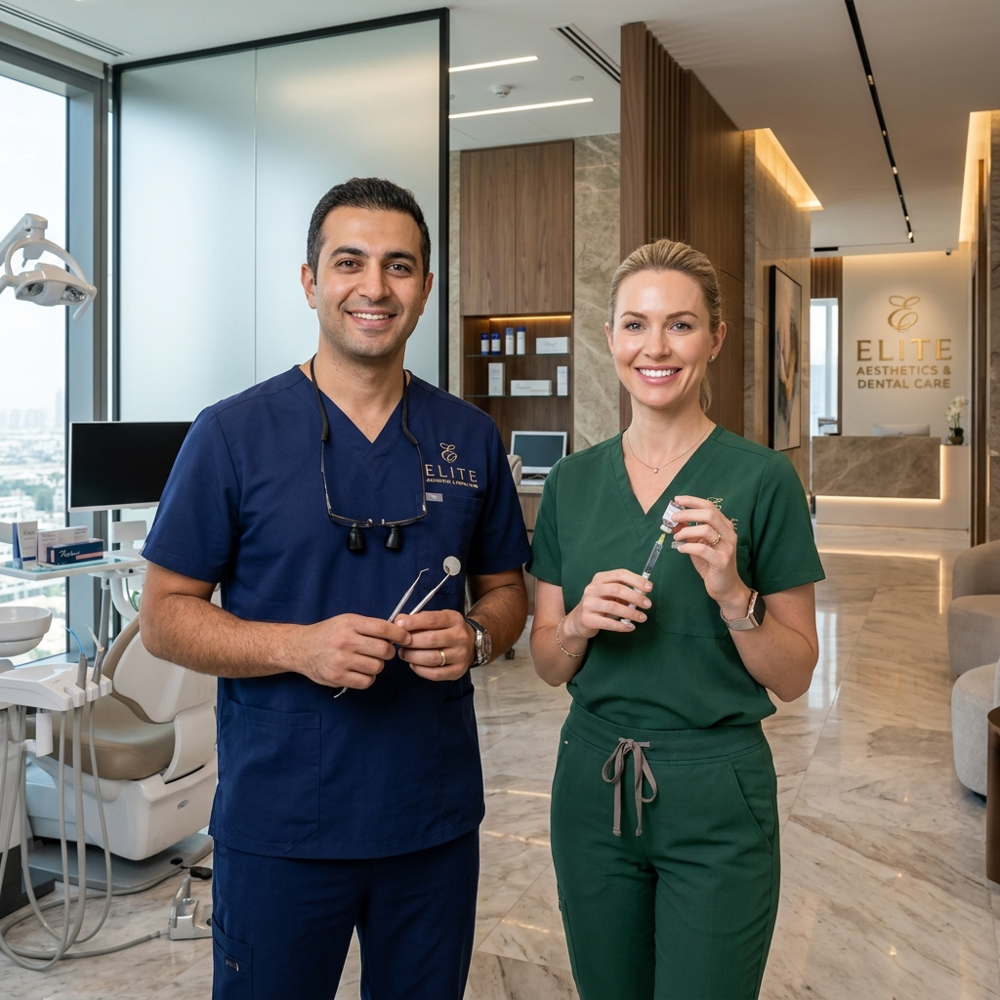

A excelência clínica começa nas pessoas. Uma equipa especializada, com uma abordagem baseada em evidência e uma forte componente humana.
O Dr. Luís Santos desenvolve a sua prática com base numa visão global da medicina dentária, ao entender a saúde oral como parte integrante do equilíbrio funcional do organismo.
Filosofia clínica: Tratar de forma consciente, informada e orientada para a saúde a longo prazo.
Atua na área da estética facial com uma abordagem clínica rigorosa, focada na harmonia, na anatomia e na naturalidade dos resultados.
Abordagem clínica: Resultados naturais, progressivos e seguros, integrados com a saúde oral e o bem-estar geral.
Dedica-se à saúde oral infantil, com uma abordagem centrada na prevenção, na educação e na criação de experiências positivas desde a primeira consulta.
Abordagem clínica: Gentileza, empatia e rigor científico, adaptados a cada fase do desenvolvimento infantil.
A integração entre as diferentes áreas clínicas permite uma abordagem mais completa, segura e personalizada.
Agende a sua consulta